Maîtriser les Paramètres dans les Pipelines Microsoft Fabric
Créez des pipelines ETL dynamiques, modulaires et réutilisables
Niveau DébutantObjectifs du tutoriel
Dans ce tutoriel pratique, nous allons explorer comment transformer un pipeline de données statique en un moteur ETL flexible grâce aux paramètres. En suivant un scénario concret d'ingestion depuis une API, vous apprendrez à rendre vos flux de données adaptables à différents contextes sans modifier leur logique interne.
Pourquoi paramétriser les Pipelines de données ?
Les pipelines de données dans Microsoft Fabric permettent d'orchestrer des flux de travail complexes : extraction, transformation et chargement de données depuis diverses sources.
Afin qu'un un pipeline soit véritablement dynamique et donc réutilisable, il n'est pas suffisant de configurer des valeurs fixes en dur dans la définition du pipeline.
Et c'est là qu'interviennent les paramètres. En effet, ils permettent de rendre les pipelines dynamiques et modulaires sans toucher à la logique sous-jacente.
Dans ce tutoriel, nous allons apprendre à :
- Créer et configurer des paramètres dans un pipeline Fabric
- Les utiliser dans vos activités (Copy Data, Dataflow, Notebook, etc.)
- Transmettre des valeurs dynamiquement lors de l'exécution
- Appliquer les bonnes pratiques pour maintenir des pipelines clairs et évolutifs
| Obectif | Description |
|---|---|
| ✅ Créer & Configurer | Apprendre à créer et paramétrer des variables dans un pipeline Fabric. |
| ✅ Utiliser dans les Activités | Intégrer ces paramètres dans des activités clés : Copie de données, Notebook, Procédure stockée. |
| ✅ Transmettre Dynamiquement | Passer des valeurs différentes à chaque exécution du pipeline. |
| ✅ Appliquer les Bonnes Pratiques | Concevoir des pipelines clairs, maintenables et évolutifs, prêts pour la production. |
À la fin, vous disposerez des bases pour construire des pipelines modulaires, faciles à maintenir et prêts pour la production.
Scénario
Pour illustrer l'utilisation des paramètres dans un pipeline ETL de données paramétré , nous allons suivre le scénario suivant :
- Créer un pipeline de données paramétré
- Extrait des données depuis une API RESTful externe ([REST Countries](https://restcountries.com/))
- Transforme ces données avec un notebook Spark
- Charge les données transformées dans une table SQL
Le paramètre permettra d'exécuter le pipeline avec différents noms de pays.
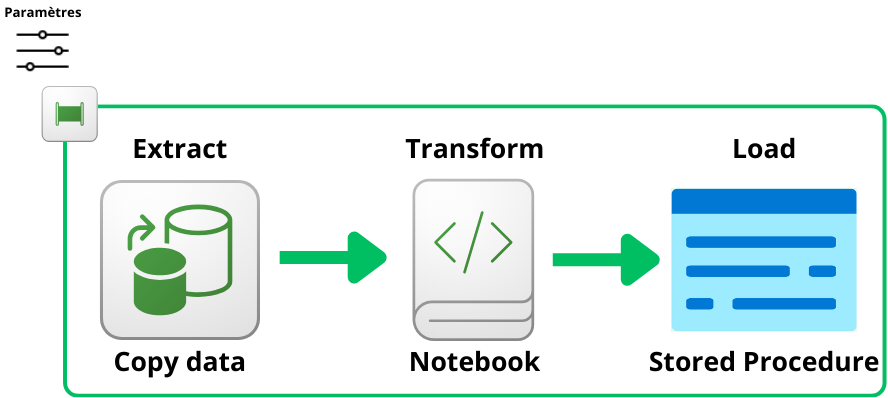
Avant de commencer l'implémentation du pipeline ETL paramétré, nous allons mettre en place l'infrastructure nécessaire à la réalisation de ce tutoriel :
- Nous procéderons d'abord à la création d'un Workspace dédié dans Microsoft Fabric, qui servira de conteneur pour l'ensemble de nos ressources et garantira une isolation propre de notre projet.
- À l'intérieur de cet espace de travail, nous créerons ensuite un Lakehouse qui jouera un rôle central dans notre architecture : il accueillera à la fois les fichiers bruts extraits depuis l'API externe (dans le répertoire Files/raw/clients/) et les données transformées issues du notebook Spark (dans Files/transformed/clients/).
- Enfin, nous mettrons en place une base de données SQL (via l'endpoint SQL du lakehouse) qui contiendra notre table de destination clients_final ainsi que la procédure stockée usp_Charger_Clients responsable du chargement final des données.
L'ensemble de ces éléments constitue l'écosystème technique indispensable pour illustrer concrètement chacune des étapes de notre tutoriel, depuis l'extraction paramétrée jusqu'au chargement final en passant par les transformations.
Création d'un Workspace
La première étape de notre mise en œuvre consiste à créer un workspace dédié dans Microsoft Fabric, qui servira de conteneur centralisé pour l'ensemble des ressources de notre projet ETL.
Pour cela, commencer par vous connecter au portail Microsoft Fabric avec nos identifiants puis suivre les étapes suivantes :
- Cliquer sur Home depuis la volet gauche de l'interface de Microsoft Fabric
- Sélectionner le bouton + New Workspace
- Depuis le fenêtre de configuration qui s'ouvre, attribuer un nom pour ce nouveau Workspace dans le champ Name . Ici nous allons nommer notre Workspace TutorialPipelineParameters.
- Entrer une description pertinente afin de documenter l'objectif de cet environnement dans le champ Description [Optionnel]
- Cliquer sur le bouton Apply pour valider la création du Workspace
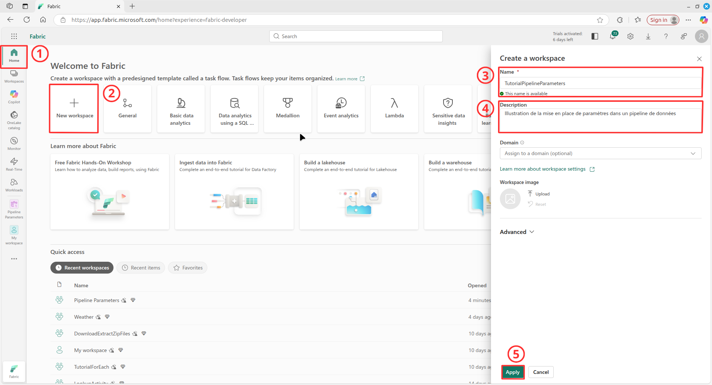
Création d'un Lakehouse
Après la création de notre Workspace, nous allons voir comment créer un Lakehouse de données pour stocker les différents fichiers qui seront manipuler dans ce tutorial. Depuis l'interface de notre Workspace, suivre les étape suivante :
- Cliquer sur le bouton + New item
- Depuis le volet droit qui s'ouvre, taper le terme "*Lakehouse*" dans le champ de recherche
- Sélectionner Lakehouse dans la liste des éléments disponibles.
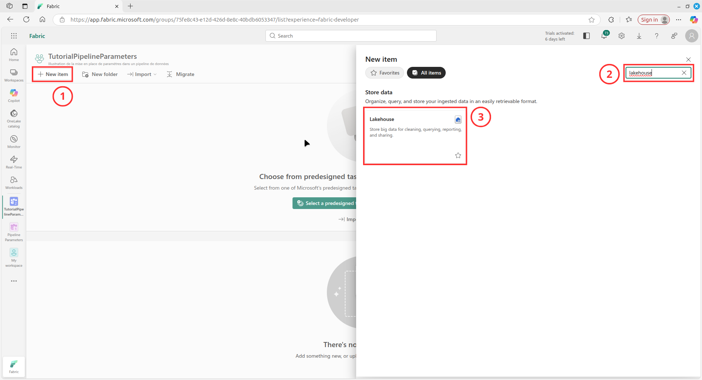
Cela va ouvrir une fenêtre de configuration depuis laquelle nous allons pouvoir renseigner le nom du Lakehouse à créer en suivant les étapes suivantes :
- Entrer un nom explicite de votre choix dans le champ Name
- Depuis le champ Location, s'assurer sur ce Lakehouse est bien positionner dans le Workspace que nous avons créé.
- Cliquer sur le bouton Create pour valider la création de ce Lakehouse
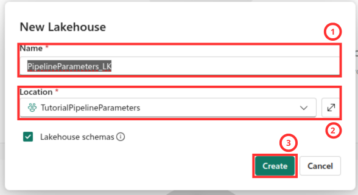
Création d'une base SQL Database
Pour finaliser la mise en place de notre infrastructure, nous allons maintenant créer une SQL Database qui hébergera notre table de destination final ainsi que la procédure stockée servant à insérer les données dans la table.
Depuis le Workspace qui a été créé suivre les étapes suivantes :
- Cliquer sur le bouton + New item
- Dans le champ de recherche, taper le terme *SQL*
- Sélectionner l'option SQL Database dans la section Store data.
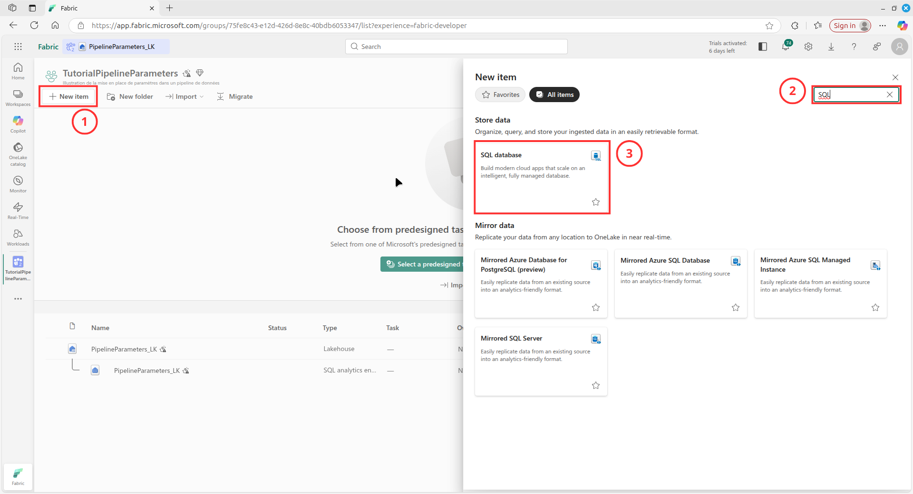
Une fenêtre de configuration New SQL database s'ouvre qui va permettre d'attribuer un nom significatif cette base de données SQL :
Cela va ouvrir une fenêtre et suivre les étapes suivantes :
- Entrer un nom pour cette nouvelle base de données dans le champ Name . Dans notre exemple, nous nommons cette base : SQL PipelineParameters_SQL.
- Cliquer sur le bouton Create pour valider la création de la base de données.
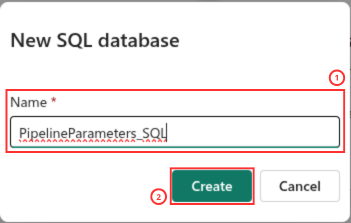
Création d'un Pipeline
Nous allons maintenant créer le **pipeline** qui orchestrera l'ensemble de notre flux ETL paramétré. Depuis notre Workspace `WS_Tutoriel_Ingestion_API`,
- Revenir dans l'interface du Workspace que nous avons créé précédemment
- Cliquer sur le bouton + New item
- Dans le volet droit qui s'ouvre, taper le terme Pipeline dans le champ de recherche
- Sélectionner "Pipeline" dans la section "Get data"
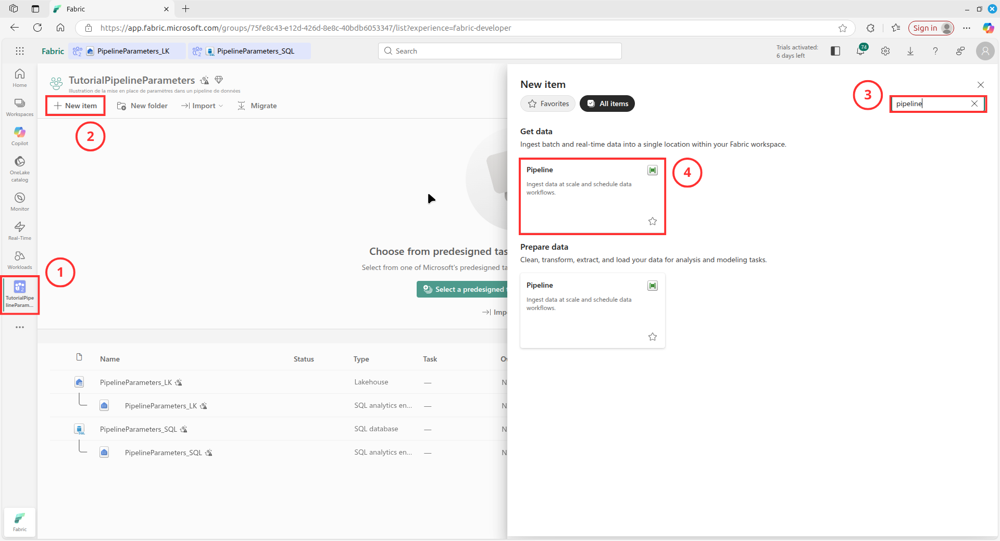
Cela va ouvrir la fenêtre qui va permettre de nommer ce Pipeline en suivant les étapes suivantes :
- 1. Depuis la fenêtre New Pipeline, entrer un nom de votre choix dans le champ Name . ici nous le nommons *PipelineParameters*
- 2. Cliquer sur le bouton Create pour valider la création de ce Pipeline .

Définition des Paramètres dans un Pipeline
Après avoir créé notre Pipeline PL_Ingestion_Clients_API, nous allons maintenant configurer les paramètres qui le rendront dynamique et réutilisable pour différentes exécutions.
Pour accéder à cette fonctionnalité, depuis l'interface du Pipeline , suivre les étapes suivantes :
- Cliquer sur le bouton Paramètres représenté par une roue crantée. Cela va ouvrir une fenêtre de configuration.
- Cliquer sur la croix x pour fermer cette fenêtre
- Redimensionner le menu du bas vers le haut
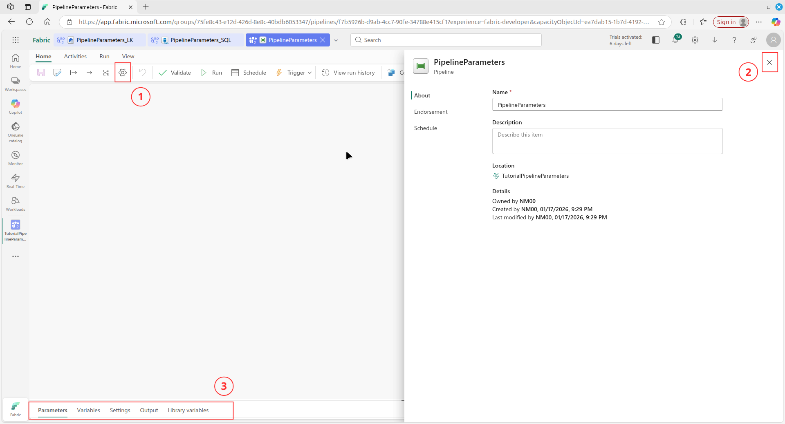
Dans cette fenêtre de configuration du Pipeline, nous allons pouvoir inscrire les paramètres souhaités de la façon suivante :
- Sélectionner l'onglet Parameters qui permet d'accéder à une interface dédiée à la gestion des paramètres.
- Cliquer sur + New pour ajouter un paramètre et permettre de définir ses caractéristiques
- Dans le champ Name , entrer un nom pour le paramètre. Ici le paramètre est nommé *name*.
- Dans le champ Type, choisir le type souhaité pour ce paramètre. Ici le type de paramètre est choisi de type *String*.
- Dans le champ Default value, définir une valeur par défaut si souhaité. Ici nous définissons *canada* comme valeur par défaut.
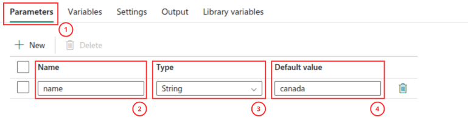
Une fois un paramètre créé, il devient accessible dans tout le Pipeline via la syntaxe d'expression dynamique @pipeline().parameters.‹nom_du_parametre›, que nous pourrons utiliser dans les configurations de nos activités Copy Data, Notebook et Procédure stockée. Cette approche paramétrée transforme un Pipeline en un modèle réutilisable capable de s'adapter à différentes dates d'exécution, différentes catégories de clients, ou même d'autres cas d'usage similaires sans avoir à dupliquer ou modifier la logique métier.
Mise en place d'une activité Copy Data paramétrée
Nous allons maintenant configurer l'activité Copy Data qui assurera l'extraction des données depuis l'API externe vers notre Lakehouse, en utilisant les paramètres du Pipeline pour dynamiser cette opération.
L'ajout d'une activité Copy data se fait de la façon suivante depuis l'interface du Pipeline :
- Depuis le menu du Pipeline, cliquer sur Add copy data activity ce qui va ajouter cette activité au canevas du Pipeline
- En cliquant sur cette activité, le panneau de configuration s'ouvre avec plusieurs onglets que nous allons décrire à présent.
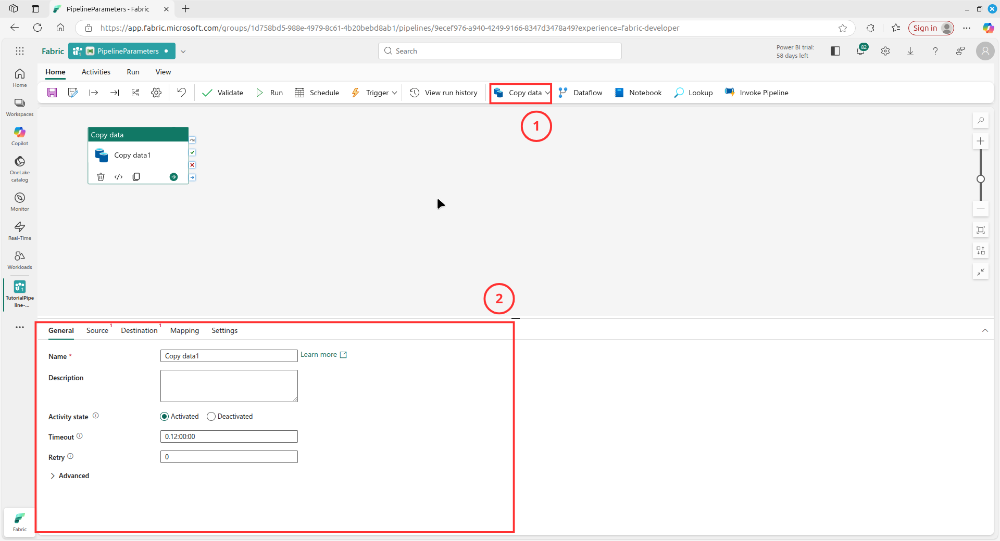
Activité Copy data : menu General
Nous allons commencer par le menu General , qui va permettre de nommer explicitement cette actvité :
- Cliquer sur l'onglet General
- Dans le champ Name , entrer un nom de votre choix à cette activité. Ici l'activité est nommée Request Countries
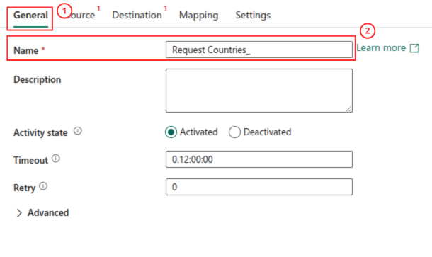
Activité Copy data : menu Source
Nous allons définir la source des données de cette activité Copy data qui va permettre de configure l'URL de l'API RESTful. C'est dans cette section que nous allons exploiter pour la première fois les paramètres du Pipeline/p>
Activité Copy data : Menu Source - Paramètre Connection
Pour commencer, nous allons définir le type de connexion :
- Sélectionner l'onglet Source
- Développer le menu déroulant du champ Connection
- Cliquer sur l'option Browse all
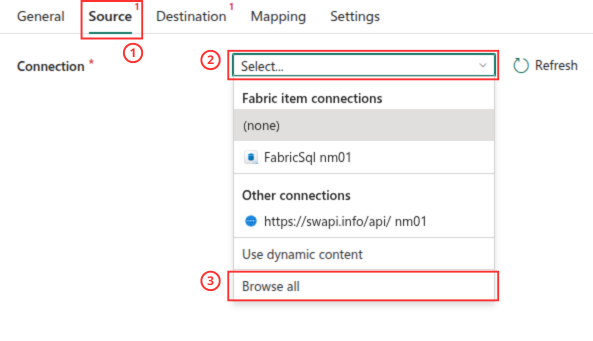
Cela va ouvrir la fenêtre de configuration Get dat / Choose a data source to get started dans laquelle vous allez pouvoir inscrire l'URL de base de l'API RESTful :
- Dans le champ de recherche, taper le terme http
- Choisir l'option Htpp - Other dans le champ New sources
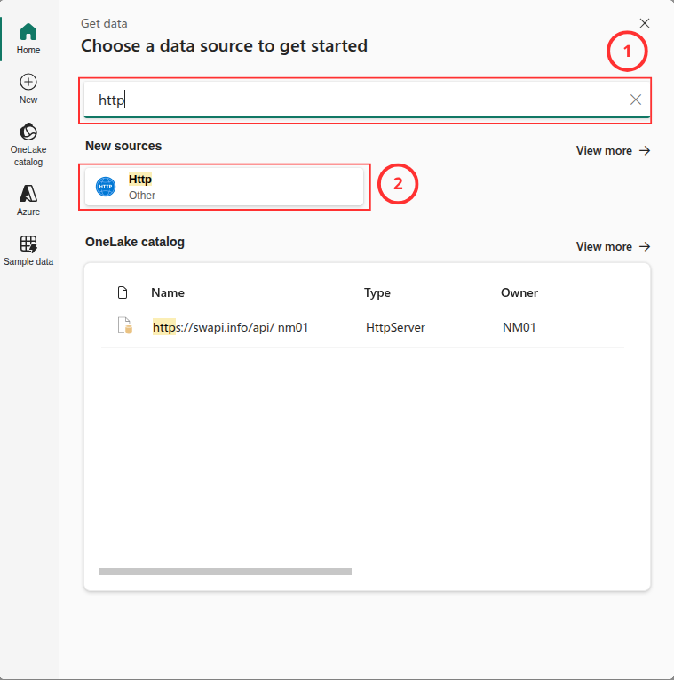
Cela va ouvrir la fenêtre Connect data source dans laquelle vous allez pouvoir inscrire l'URL de l'API en suivant les étapes suivantes :
- Renseigner l'adresse de l'API REST Countries dans le champ Url : https://restcountries.com/v3.1/name/
- Cliquer sur le bouton Connect
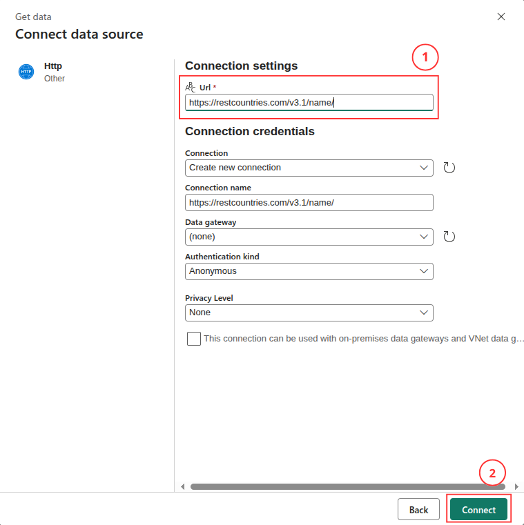
Activité Copy data : menu Source - Paramètre 'Relative URL'
Toujours depuis le menu Source, nous allons définir le paramétrage de l'appel à cette API en utilisant le paramètre du Pipeline. Pour cela, suivre les étapes suivantes :
- Cliquer dans le champ Relative URL
- Cliquer sur le lien Add dynamic content [Alt+Shift+D].
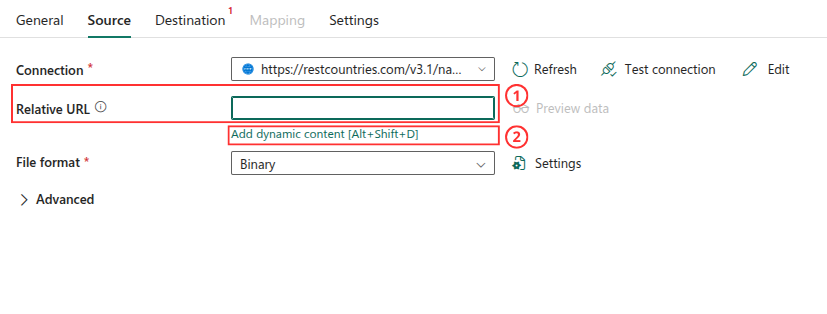
Cela va ouvrir la fenêtre Pipeline expression builder qui va permettre de construire le paramétrage dynamiquement en suivant les étapes suivantes :
- Sélectionner l'onglet Parameters ce qui va permettre d'afficher en-dessous les paramètres définis dans le Pipeline de données
- Cliquer sur le paramètre name que nous avons définis précédemment dans le Pipeline
- Dans la fenêtre, on voit s'afficher l'expression construite par cette dernière action. On retrouve ici l'appel du paramètre *name* via la syntaxe d'appal dynamique : @pipeline().parameters.name
- Cliquer sur le bouton OK pour fermer cette fenêtre.
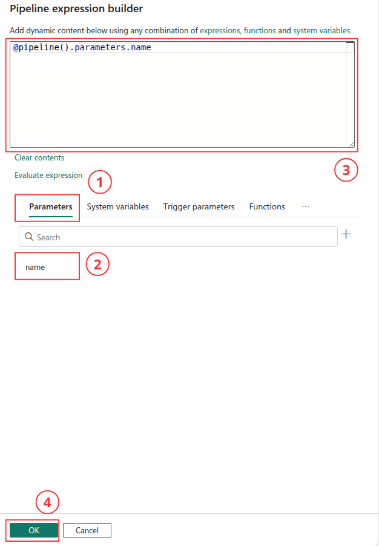
Activité Copy data : Menu Source - Paramètre File format
Enfin pour terminer, vous allez pouvoir préciser le format de fichier qui sera téléchargé de la façon suivante :
- Depuis le champ File format, définir le type de fichier attendu. Ici, nous allons récupérer des fichiers de type JSON depuis l'API.
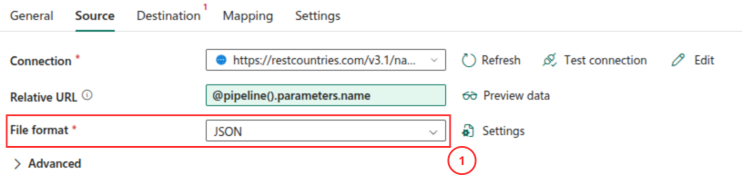
Activité Copy data : Menu Destination
Depuis l'onglet Destination, nous allons pouvoir préciser le lieu de sauvegarde dans un Lakehouse au format JSON, avec un nom de fichier généré dynamiquement.
Activité Copy data : Menu Destination - Paramètre Connection
Le paramètre Connection va permettre d'indiquer le Lakehouse où sauvegarder les données. Pour cela, suivre les étapes suivantes :
- Cliquer sur l'onglet Destination
- Afficher le menu déroulant du champ Connection
- Cliquer sur l'option Browse all
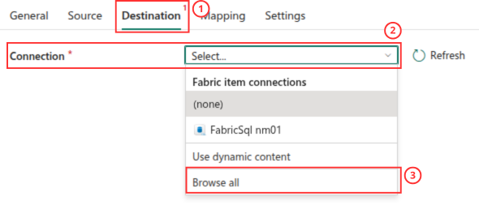
Cela va ouvrir une fenêtre Get data / Choose a destination :
- Choisir le Lakehouse que nous avons créé précédemment : PipelineParameters_LK
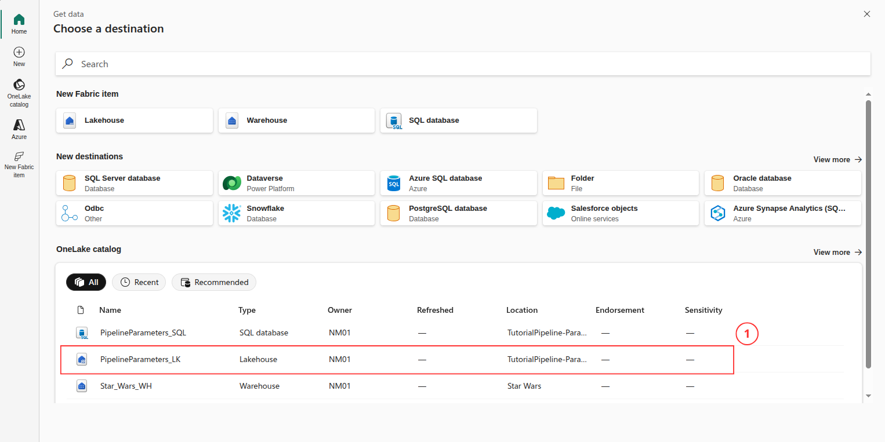
Activité Copy data : menu Destination - Paramètres 'Root folder' et 'File path'
Nous allons poursuivre de la façon suivante en définissant le type de fichier et la façon de le nommer:
- Dans le champ Root folder, choisir l'option Files pour indiquer que l'on souhaite sauvegarder les données sous un format fichier.
- Dans le champ File path, vous allez pouvoir définir le chemin de stockage du fichier. Inscrire le nom du répertoire souhaité dans le premier champ. Dans notre exemple, nous allons les stocker dans un répertoire nommé JSON.
- Sélectionner le deuxième champ depuis le champ File path depuis lequel nous allons pouvoir définir dynamiquement le nom du fichier de sauvegarde.
- Cliquer sur le lien Add dynamic content [Alt+Shift+D].
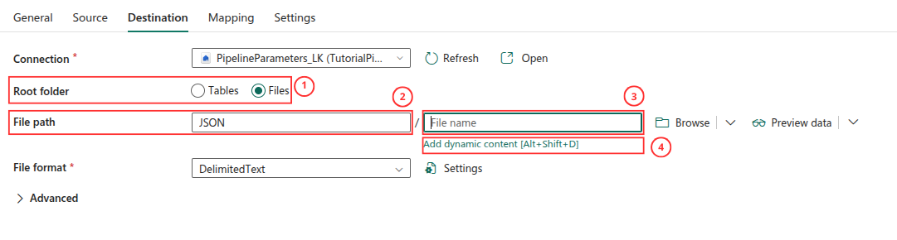
Cela va ouvrir la fenêtre Pipeline expression builder qui va permettre de construire dynamiquement l'expression définissant le nom du fichier :
- Dans la fenêtre d'expression, nous allez copier-coller l'expression suivante :
La fonction @concat() permet de concaténer des chaînes de caractères. Dans cette expression,nous allons concaténé le nom du fichier avec l'extension .json. Le nom du fichier est défini dynamiquement à partir du paramètre du Pipeline : pipeline().parameters.name
@concat(pipeline().parameters.name, '.json')
- Cliquer sur le bouton OK pour fermer cette fenêtre.
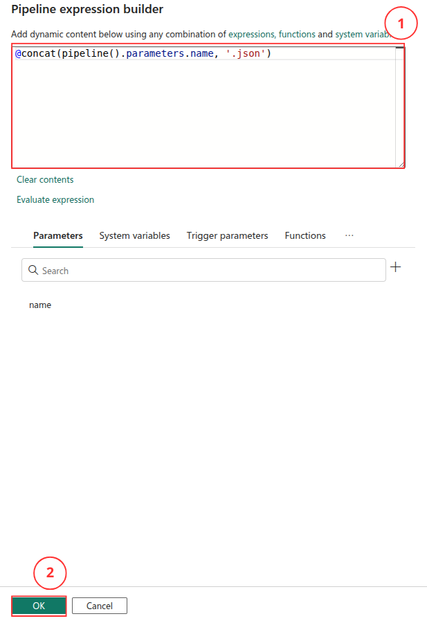
Activité Copy data : menu *Destination* - Paramètre *File format*
Enfin il reste à définir le format de stockage des fichiers à télécharger :
- Depuis le champ File format, utiliser le menu déroulant et choisir JSON comme format de stockage
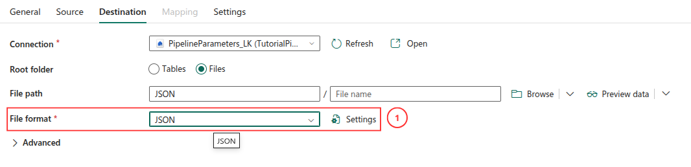
Mise en place d'une activité Notebook paramétrée
Nous allons voir à présent comment mettre en place d'un notebook qui utilisera de façon dynamique les paramètres d'un Pipeline. Pour cela, il faudra dans le Notebbok lui-même créer un paramètre dans une cellule dédiée aux paramètres. Et il faudra ajouter une activité Notebook dans le Pipeline à laquelle il faudra lui ajouter un paramètre de type clé-valuer : le nom du paramètre attendu par le notebook (clé) et la valeur dynamique que l'on souhaite lui attribuer. Ainsi, au moment de l'exécution, le Pipeline transmet automatiquement la valeur du paramètre au notebook permettant d'utiliser la valeur définie au niveau du Pipeline.
A présent, nous allons voir comment mettre en place l'ensemble des éléments pour réaliser cela/p>
Mise en place d'un Notebook - Python
Création du Notebook
La création d'un notebook peut se faire depuis l'interface du Workspace en suivant les étapes suivantes :
- Cliquer sur le bouton + New item
- Dans le volet droit, taper le terme notebook dans le champ de recherche
- Sélectionner l'icône Notebook pour en créer un.
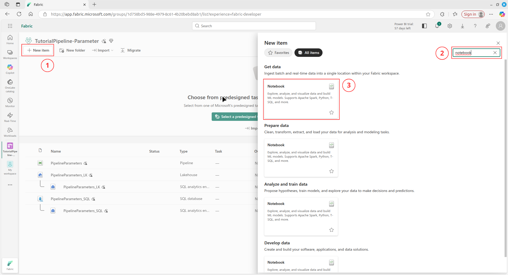
Cela va ouvrir une fenêtre New Notebook permettant de nommer ce Notebook en suivant les étapes suivantes :
- Dans le champ Name , inscrire un nom de votre choix pour ce Notebook. Dans notre exemple, le Notebook est nommé Parse Country JSON
- S'assurer que ce Notebook est bien associé au Workspace que nous avons créé dans ce tutoriel.
- Cliquer sur le bouton Create pour finaliser la création de ce Notebook.
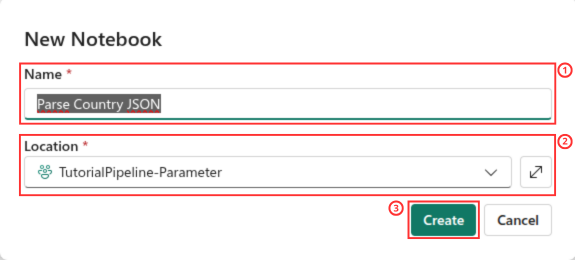
Association d'un Lakehouse
Ce notebook doit être associé à notre Workspace et va venir manipuler les fichiers qui sont stockés dans notre Lakehouse.
Pour cela, vous allez devoir suivre les étapes suivantes depuis l'interface du Notebook que nous venons de créer :
- Depuis le volet Explorer, cliquer sur le bouton Add data items
- Choisir l'option New lakehouse
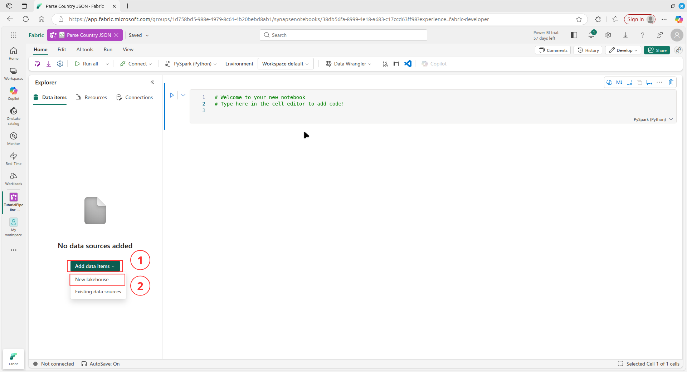
Cela va ouvrir une fen^tre dans laquelle vous pourrez choisir les données à associer à ce Notebook.
- Choisir le Lakehouse que nous avons créé précédemment *PipelineParameters_LK*
- Cliquer sur le bouton Connect
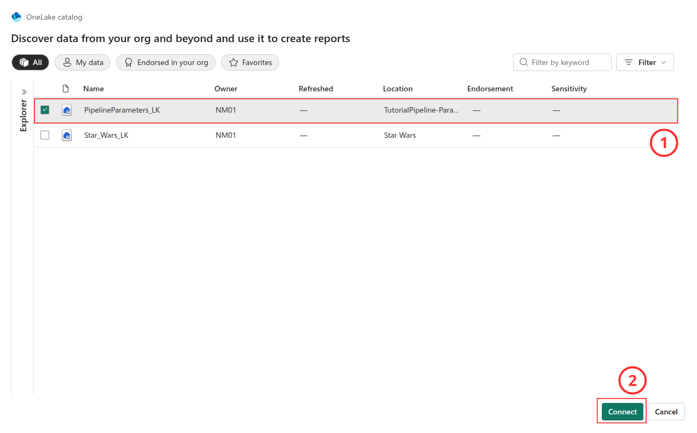
Mise en place du code Python
Dans notre exemple, nous allons utiliser Python pour transformer les fichiers JSON que nous avons téléchargé précédemment avec l'activité Copy data. L'objectif est de lire un fichier JSON et en extraire les données qui seront stockés sous la forme de table dans des fichiers CSV.
Étant donné la faible volumétrie des données à manipuler, nous allons utiliser un kernel Python (par défaut les notebooks sont paramétré pour exécutés avec PySPark). Pour indiquer que nous souhaitons réaliser nos calculs depuis un kernel Python, vous allez devoir le faire de la façon suivante :
- Cliquer et choisir l'option Python
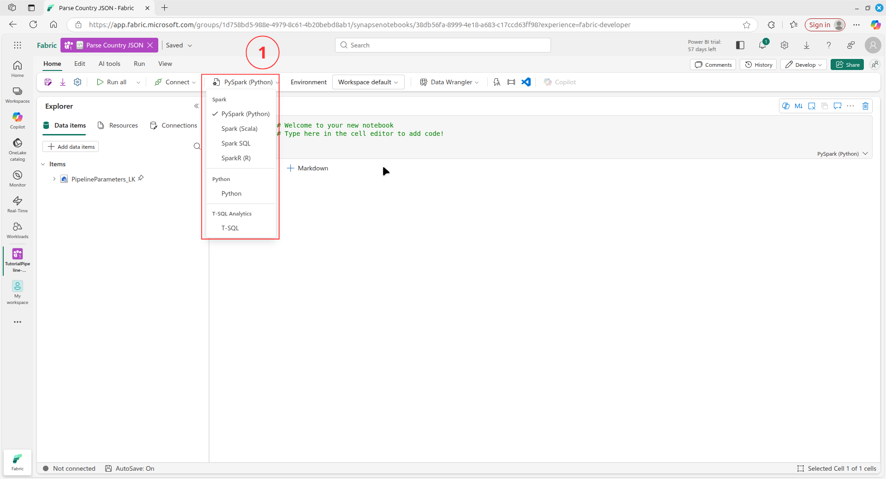
Afin de simplifier les propos et se focaliser sur le sujet principale de ce tutoriel, nous avons limiter ce Notebook à trois cellules.
- Import des librairies Python json et pandas
- Déclaration d'une variable name de type string. Elle servira par la suite de pont avec la variable définie dans le Pipeline de données
- Réalisation du parsing du fichier JSON et enregistrement sous la forme de CSV du résultat
import json import pandas as pd
name = "canada"
with open(f"/lakehouse/default/Files/JSON/{name}.json", 'r') as f:
# Read JSON file
data = json.load(f)
# Build dataframe
df = pd.DataFrame({'Pays': [data[0]['name']['common']],
'Capital': [data[0]['capital'][0]],
'Region': [data[0]['region']],
'Subregion': [data[0]['subregion']],
'Flags': [data[0]['flags']['png']]})
# Define the directory path and file name
output_dir = "/lakehouse/default/Files/CSV/"
path_csv = os.path.join(output_dir, f"{name}.csv")
# Create the directory if it doesn't exist
os.makedirs(output_dir, exist_ok=True)
# Save the DataFrame to the file
df.to_csv(path_csv, index=False)
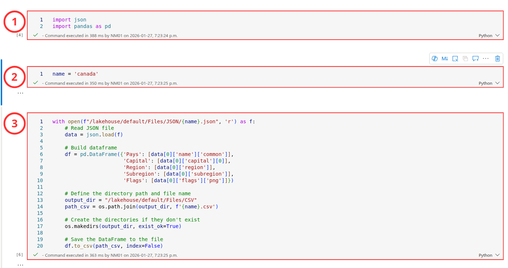
Définition d'un paramètre dans un Notebook
La définition d'un paramètre dans un notebook Microsoft Fabric suit une convention spécifique qui permet une intégration fluide avec les Pipelines.
Pour créer un paramètre, il faut dédier une cellule en haut du notebook et y déclarer les variables avec des valeurs par défaut. L'élément crucial est ensuite d'activer le tag "paramètres" sur cette cellule.
Cette action signale à Fabric que cette cellule contient des paramètres pouvant être surchargés lors d'une exécution via un Pipeline. Ainsi, lorsque le Notebook est appelé par une activité de Pipeline, les valeurs définies dynamiquement dans ce dernier remplacent automatiquement les valeurs par défaut de la cellule taguée, permettant au code des cellules suivantes d'utiliser ces variables sans aucune modification.
Voyons comment créer ce type de cellule pour paramètre, en suivant les étapes
- Passer la pointeur de la souros dans le coi gaiche de la cellule et cliquer sur les trois points
- Dans les options roposées, chosiir Toggle parameter cell
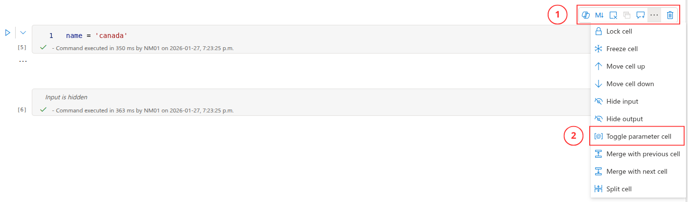
Mise en place d'une activité Notebook
Ajout d'une activité Notebook au Pipeline
L'ajout d'une activité notebook dans un Pipeline Microsoft Fabric permet d'orchestrer l'exécution de vos notebooks au sein d'un flux de traitement automatisé.
- Ouvrir le Pipeline dans l'interface Fabric
- Cliquer sur le menu Activities
- Cela ajoute l'activité Notebook au canevas du Pipeline
- Une fois déposée, cliquez sur l'activité pour accéder à ses paramètres de configuration.
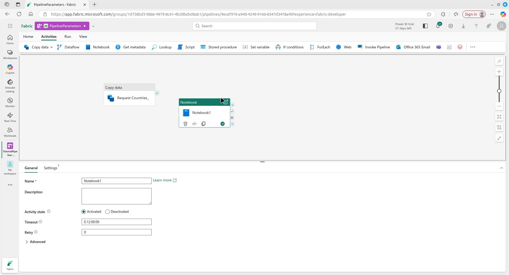
Activité Notebook - Menu General
Le menu General d'une activité Notebook dans un Pipeline Microsoft Fabric constitue la première section de configuration, dédiée à l'identification et à la description de l'activité au sein du flux de traitement.
C'est dans cet onglet que l'on définit le nom de l'activité, qui doit être unique au sein du Pipeline pour permettre une référence claire, notamment lors de la création de dépendances entre activités. On peut également y ajouter une description détaillée pour documenter le rôle spécifique de ce notebook dans le processus global, facilitant ainsi la maintenance et la compréhension par d'autres collaborateurs.
Pour faire cela, suivre les étapes suivantes :
- Aller dans le menu General
- Dans la champ Name, entrer un nom explicite pour cette activité Parse JSON to CSV
- Dans le champ Description, entrer une description pour documenter l'activité si souhaité [Optionnel]

Activité Notebook - Menu Settings
Le menu Settings d'une activité notebook dans un Pipeline Microsoft Fabric est l'interface centrale permettant de lier le notebook à exécuter et de configurer les paramètres qui lui seront transmis.
- Accéder à l'onglet Settings
- Dans la champ Workspace, sélectionner le workspace que nous avons créé précédemment : TutorialPipeline-Parameter
- Dans le champ Notebook, sélectionner le notebook que nous venons de créer pour transformer le fichier JSON en CSV : Parse Country JSON
- Développer la section Base parameters
- Cliquer + New pour ajouter un paramètre dans l'éditeur
- Dans le champ Name, entrer le nom du paramètre qui est celui utilisé dans le notebook dans la cellule des paramètres. Ici, il s'agit du paramètre name.
- Dans le champ Type, sélectionner le type du paramètre dans le menu déroulant. Ici, choisir le type String.
- Dans le champ Value, entrer la valeur dynamique définie dans le Pipeline :
@pipeline().parameters.name
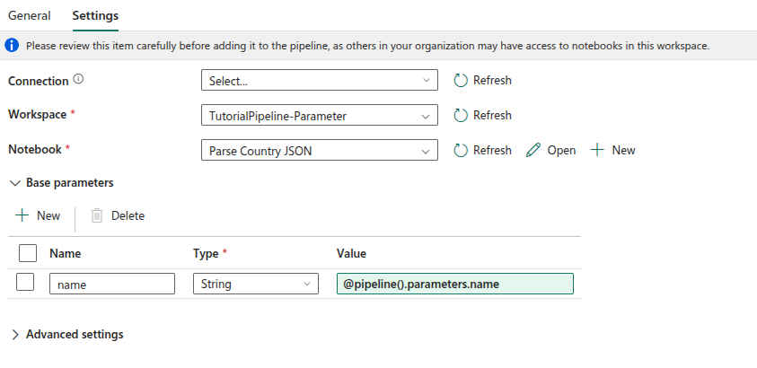
Cette configuration permet de créer des Pipelines génériques où le même notebook peut traiter différentes sources ou cibles selon le contexte d'exécution, sans aucune modification manuelle de son code.
Utilisation des Paramètres dans une Procédure Stockée
Mise en place des éléments nécessaires dans SQL Database
Dans Microsoft Fabric, la création d'objet dans une base de données SQL peut se faire de plusieurs manières. Dans notre exemple, nous allons avoir bessoin d'une table de destination pour le résultat final d'un ETL et d'une procédure stockée pour réaliser le chargement. Dans notre exemple, nous allons utiliser une méthode de création manuelle avec T-SQL (via l'Éditeur de Requêtes).
Création d'une table
- Depuis l'espace de travail Fabric, ouvrez l'item de SQL Database que nous avons créé précédemment et qui doit contenir la table finale.
- Ouvrir un nouvel éditeur de requêtes : Dans le ruban, cliquer sur "New SQL query" .
- Écririr le script de création avec la commande CREATE TABLE standard :
CREATE TABLE [dbo].[Countries] ( [Pays] NVARCHAR(16) NOT NULL, [Capital] NVARCHAR(16) NOT NULL , [Region] NVARCHAR(16) NOT NULL , [Subregion] NVARCHAR(16) NOT NULL , [Flags] NVARCHAR(32) NOT NULL ) GO
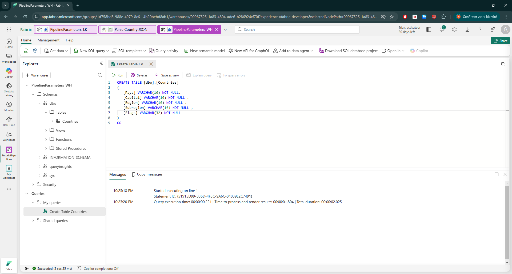
Une bonne pratique consiste à nommer les requêtes SQL que l'on crée avec un nom explicite pour pouvoir la retrouver facilement plus tard ou pouvoir l'appeler depuis une activité dans un Pipeline. Voilà comment vous pouvez le faire depuis l'éditeur de requête :
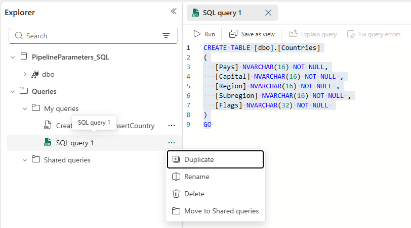
Console de gestion
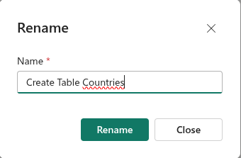
Interface en ligne de commande
Creation d'une procédure stockée
Pour poursuivre l'illustration d'utilisation de paramètre de Pipeline, nous allons mettre en place une Procédure Stockée en T-SQL. Comme la requête de création d'un table, depuis l'interface de la base de données SQL, ouvrir une requête vide et copier-coller le code suivant :
CREATE PROCEDURE [dbo].[InsertCountry]
@name NVARCHAR(64)
AS
BEGIN
DECLARE @filePath NVARCHAR(250);
SET @filePath = CONCAT('‹path_abfss›', @name, '.csv');
DECLARE @sqlCommand NVARCHAR(MAX);
SET @sqlCommand = 'INSERT INTO [dbo].[Countries]
SELECT
[Pays] ,
[Capital] ,
[Region] ,
[Subregion] ,
[Flags]
FROM OPENROWSET(
BULK ''' + @filePath + ''',
FORMAT = ''CSV'' ,
FIRSTROW = 2,
FIELDTERMINATOR = '',''
) WITH ([Pays] NVARCHAR(16), [Capital] NVARCHAR(16),
[Region] NVARCHAR(16), [Subregion] NVARCHAR(16),
[Flags] NVARCHAR(32)) AS tt ;
'
EXECUTE sp_executesql @sqlCommand;
END
Cette procédure stockée, nommée [dbo].[InsertCountry], a pour objectif d'automatiser l'ingestion de données à partir de fichiers CSV créés par le notebook et stockés dans le lakehouse. L'ingestion va se faire dans la table [dbo].[Countries] de la base de données que nous avons cré précédemment.
La procédure attend un paramètre d'entrée unique, @name, qui correspond au nom du fichier du fichier CSV à charger et qui sera piloté par le paramètre du Pipeline @pipeline().parameters.name.
À partir de ce paramètre, le chemin d'accès complet @filePath vers le fichier source est construit en concaténant un préfixe de chemin ABFSS ‹path_abfss› avec la valeur du paramètre et l'extension ".csv".
Cette procédure est idéale pour être appelée depuis une activité Stored Procedure d'un Pipeline Data Factory, où elle pourrait être itérée pour charger plusieurs fichiers CSV correspondant à différents pays, chacun étant passé dynamiquement comme paramètre du Pipeline.
Mise en place d'une activité Stored procedure dans le Pipeline de Données
Ajout d'une activité Stored procedure au Pipeline
L'intégration d'une activité Stored Procedure dans un Pipeline permet d'exécuter des procédures stockées directement depuis une base de données source ou de destination.
- Ouvrir l'interface du Pipeline pour afficher le canevas du data workflow
- Aller dans le menu Activities
- Cliquer sur l'activité Stored Procedure depuis la palette des activités
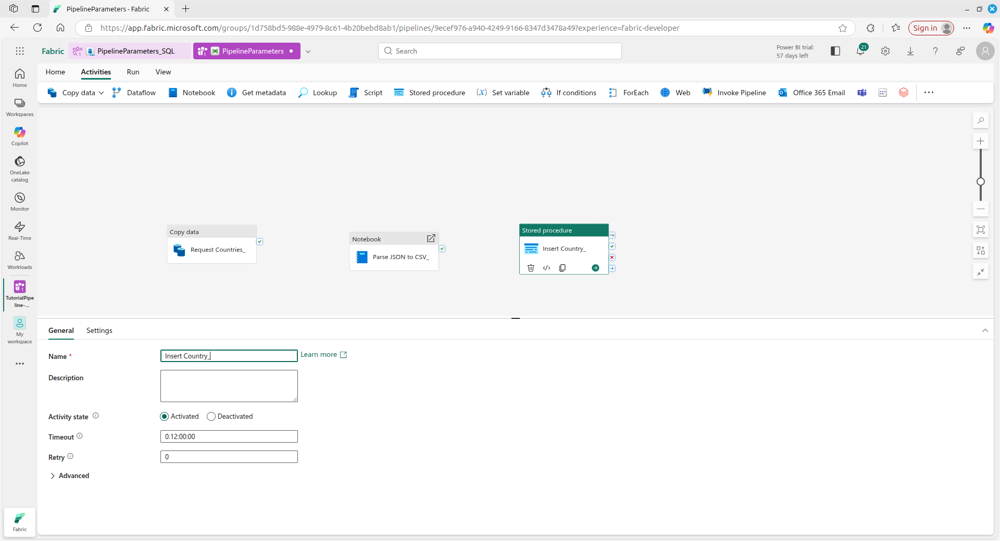
Activité Stored procedure - Menu General
Dans un Pipeline Microsoft Fabric, le menu General d'une activité Stored Procedure constitue la première étape de configuration, accessible dès que l'activité est ajoutée au canevas. On y renseigne tout d'abord un nom explicite pour l'activité, qui permettra de l'identifier clairement dans le flux d'exécution du Pipeline. Ce menu offre également la possibilité d'ajouter une description détaillée, une bonne pratique pour documenter le rôle de l'étape. Pour cela, suivre les étapes suivantes :
- Aller dans l'onglet General
- Dans le champ Name, entrer un nom explicite pour cette activité
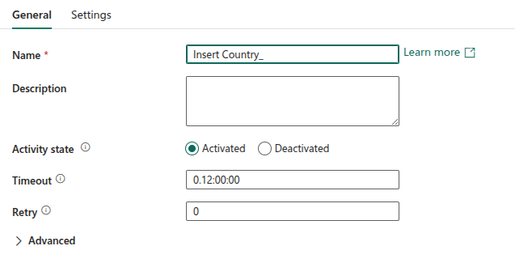
Activité Stored procedure - Menu Settings
Dans un Pipeline Microsoft Fabric, le menu Settings d'une activité Stored Procedure est l'endroit crucial où l'on connecte l'activité à la base de données cible et où l'on spécifie la logique à exécuter.
- Aller dans l'onglet Settings
- Depuis le menu déroulant Connection, sélectionner la connection qui est utilisé par ce Workspace
- Depuis le menu déroulant SQL Database, sélectionner la base de données SQL que nous avons créé pour ce tutoriel
- Dans le menu déroulant Stored procedure name, sélectionner la procédure stockée que nous avons créé
- Sélectioner le menu Stored procedure parameters qui va permettre d'ajouter les variables en entrées attendues par la procédure stockée
- Cliquer sur + New pour ajouter une variable
- Dans le champ Name, entrer le nom de la variable tel que inscrite dans la définiton de la procédure stockée
- Dans le menu déroulant Type, sélectionner le type du paramètre. Ici le paramètre est de type String
- Dans le champ Value, entrer la valeur dynamique issue des paramètres du Pipeline :
@pipeline().parameters.name
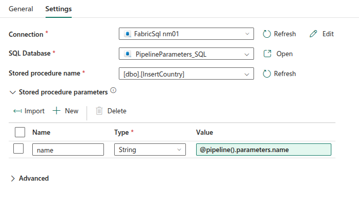
Exécition d'un Pipeline
Pour lier efficacement les activités au sein d’un Pipeline dans Microsoft Fabric, il est essentiel de comprendre le flux de contrôle et les dépendances entre les différentes tâches. Dans l’interface de la Data Factory, on établit ces liaisons en connectant visuellement les activités via leur sortie. Par exemple, après l'activité Copy data, on peut lui rattacher l'activité Notebook en faisant glisser la poignée verte (ou "success") depuis la première activité vers la seconde. Cela crée une dépendance explicite : l’activité Notebook ne s’exécutera que si l’activité de copie se termine avec succès.

Conclusion
Les paramètres dans Microsoft Fabric offrent une flexibilité essentielle pour créer des Pipelines de données robustes et réutilisables. En maîtrisant leur utilisation, vous pouvez :
- Centraliser la configuration
- Faciliter les déploiements multi-environnements
- Améliorer la maintenance des Pipelines
- Automatiser les exécutions
En suivant ce tutoriel, vous avez non seulement appris la syntaxe pour créer et utiliser des paramètres, mais vous avez surtout acquis une méthodologie pour concevoir des Pipelines de données robustes et adaptables. Cette approche paramétrique est la clé pour :
- Industrialiser vos traitements de données. Réduire la dette technique liée à la duplication de code. Faciliter la collaboration entre les équipes Data.
Vous pouvez désormais appliquer ces principes à d'autres types d'activités (Dataflow, Spark jobs) et à des scénarios plus complexes, comme la gestion de plusieurs environnements (dev, test, prod) ou l'intégration dans des processus d'ingestion continue. L'étape suivante ? Ajouter la gestion des erreurs et des alertes pour des Pipelines encore plus professionnels.